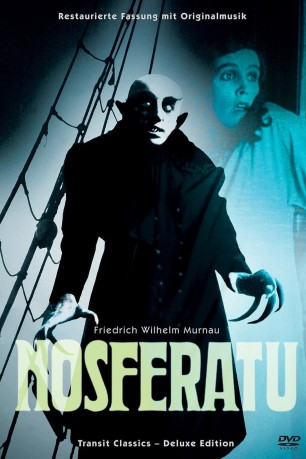

#9194 Nosferatu – Eine Symphonie des Grauens
 
 IMDB-Wertung: 8.0 / 10
IMDB-Wertung: 8.0 / 10  Metascore: 0
Metascore: 0 
Stummfilm aus dem Jahr 1922 von Regisseur F. W. Murnau, basierend auf dem Roman „Dracula“ von Bram Stoker. Ein Immobilienagent erhält den Auftrag, für einen Kunden namens Graf Dracula nach Transsylvanien zu reisen, der sich für den Kauf eines Hauses in Wismar (und seine Frau) interessiert. Klassiker der Stummfilmzeit, der vielfach kopiert wurde.
Jahr: 1922
Dauer: 95 Minuten
FSK: 12
Land: Deutschland Studio: Transit FilmTonspuren:
Untertitel:
Auflösung: 1080p (1440x1080) Größe: 6707 MB
Genre: Horror, Fantasy
Regisseur: F.W. Murnau
Drehbuch: Spenser Cohen
Soundtrack: James Bernard, James Duhamel, Hans Erdmann, Sandro Forte, Carlos U. Garza, Gérard Hourbette, Timothy Howard, Richard Marriott, Richard O'Meara, Hans Posegga, Peter Schirmann, Douglas Sosin, Bernardo Uzeda, Bernd Wilden, Thierry Zaboitzeff
Darsteller:
- Max Schreck als Graf Orlok
- Gustav von Wangenheim als Hutter
- Greta Schröder als Ellen - seine Frau
- Alexander Granach als Knock - ein Häusermakler
- Georg H. Schnell als Harding - ein Reeder
- Ruth Landshoff als Ruth - seine Schwester
- Gustav Botz als Professor Sievers - der Stadtarzt
- John Gottowt als Professor Bulwer - ein Paracelsianer
- Max Nemetz als Ein Kapitän
- Wolfgang Heinz als 1. Matrose
- Albert Venohr als 2. Matrose
- Eric van Viele als Matrose 2
- Karl Etlinger als Kontrolleur am Kai (uncredited)
- Guido Herzfeld als Wirt (uncredited)
- Hans Lanser-Rudolf als A magistrate (uncredited)
- Loni Nest als Child at Window (uncredited)
- Josef Sareny als Head coachman (uncredited)
- Fanny Schreck als Krankenschwester im Hospital (uncredited)
- Hardy von Francois als Arzt im Hospital (uncredited)
- Heinrich Witte als Wärter im Irrenhaus (uncredited)
Datei: X:\1900-1949\Nosferatu – Eine Symphonie des Grauens (1922, FSK12, 1440x1080).mkv seit 19.07.2018
Festplatte: HD 1900-1970
 Es gibt insgesamt 80 Filme in der Gruppe '1900-1949'
Es gibt insgesamt 80 Filme in der Gruppe '1900-1949'